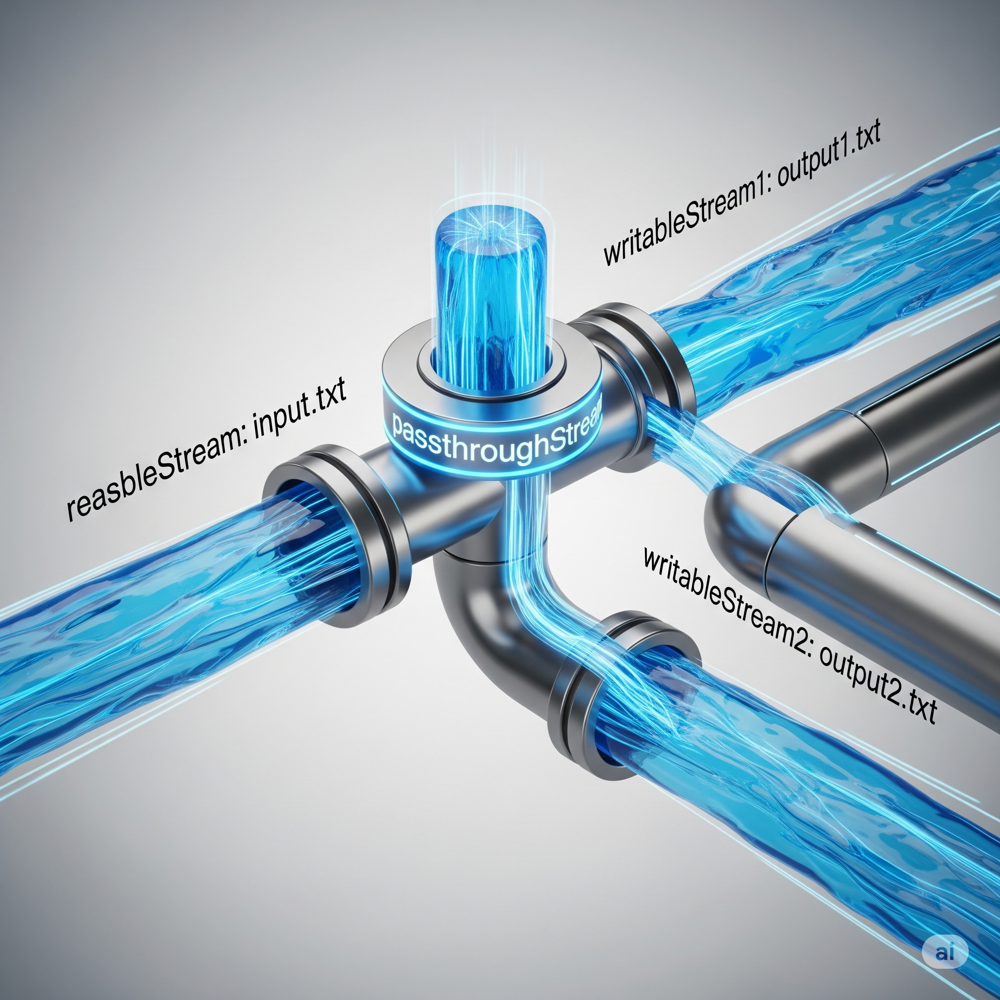

Node.js Streams
A Duplex stream
A Duplex stream in Node.js is a stream that is both **Readable** and **Writable**. This means it can both be a source of data and a destination for data, simultaneously. It's often used for network connections, where you can read data from a socket and write data to the same socket.
How it Works
A Duplex stream inherits from both the Readable and Writable classes. It has two separate internal buffers: one for reading and one for writing. Data written to the stream goes into the writable buffer, and data read from the stream comes from the readable buffer. The two sides of the stream operate independently of each other.
Basic Example
A common example of a Duplex stream is a TCP socket. You can create a simple Duplex stream using the net module in Node.js. In this example, a server listens for a connection, and when a client connects, the server echoes back whatever the client sends, but in uppercase.
Server-side server.js
const net = require('net');
const server = net.createServer((socket) => {
// 'socket' is a Duplex stream
console.log('Client connected.');
// The 'data' event is for the readable side
socket.on('data', (chunk) => {
const data = chunk.toString();
console.log(`Received from client: ${data}`);
// The 'write' method is for the writable side
socket.write(data.toUpperCase());
});
socket.on('end', () => {
console.log('Client disconnected.');
});
});
server.listen(3000, () => {
console.log('Server listening on port 3000');
});Client-side client.js
const net = require('net');
const client = net.createConnection({ port: 3000 }, () => {
console.log('Connected to server.');
// The 'write' method writes to the Duplex stream
client.write('hello world\n');
client.write('node.js streams\n');
});
// The 'data' event reads from the Duplex stream
client.on('data', (data) => {
console.log(`Received from server: ${data.toString()}`);
});
client.on('end', () => {
console.log('Disconnected from server.');
});To run this example:
- Open two terminal windows.
-
In the first terminal, run the server:
node server.js -
In the second terminal, run the client:
node client.js
The client's output will show the uppercase text it receives from the server.
Key Takeaways
- A Duplex stream combines the functionality of a Readable stream and a Writable stream.
- It has two independent operational sides: one for reading data and one for writing data.
- A classic use case is for network sockets, where data can be both sent and received through the same connection.
- Duplex streams are distinct from Transform streams, which are a type of Duplex stream that modifies or transforms data as it's being read and written.
A Transform stream
A Transform stream is a special type of Duplex stream in Node.js that can read and write data, but with the key difference that it modifies or transforms the data as it passes through. Think of a Transform stream as a filter or a processor. Data flows in on the writable side, is processed or changed, and then the transformed data flows out on the readable side. A good example is a compression stream (like zlib.createGzip()), which takes in uncompressed data and outputs compressed data.
How It Works
A Transform stream inherits from the Duplex stream class, meaning it
has a readable and a writable side. The core logic of a Transform
stream is encapsulated in its _transform() method. When
you implement a custom Transform stream, you provide the
_transform() method, which is called for each chunk of
data written to the stream.
_transform(chunk, encoding, callback)
chunk: The data chunk to be transformed.-
encoding: The encoding of the data chunk (e.g., 'utf8'). -
callback: A function that must be called after the transformation is complete. It takes an optional error as the first argument and the transformed data as the second.
Basic Example
Here's a simple example of a custom Transform stream that converts all incoming text to uppercase.
const { Transform } = require('stream');
// Create a custom Transform stream that converts text to uppercase
const toUpperCaseTransform = new Transform({
transform(chunk, encoding, callback) {
// Convert the chunk to a string, then to uppercase, then to a buffer
const transformedChunk = chunk.toString().toUpperCase();
// The 'push' method adds data to the readable buffer
this.push(transformedChunk);
// The callback signals that the transformation is complete
callback();
}
});
// A readable stream to provide the data
const readable = process.stdin; // Reads from the command line
// A writable stream to output the data
const writable = process.stdout; // Writes to the command line
// Chain the streams together
readable.pipe(toUpperCaseTransform).pipe(writable);When you run this code and type text into your console, the toUpperCaseTransform stream will intercept it, convert it to uppercase, and then print it back to the console.
To run this example:
- Save the code as `uppercase.js`.
- Run
node uppercase.jsin your terminal. - Type some text and press Enter. You will see the uppercase version of your text.
Key Takeaways
- A Transform stream is a type of Duplex stream that modifies data in transit.
- It's ideal for tasks like compression, encryption, or data formatting.
- The core logic resides in the `_transform()` method, which processes data chunks.
- Transform streams are highly useful for creating modular, reusable components in a data processing pipeline using the `pipe()` method.
A Passthrough stream
A Passthrough stream in Node.js is a special type of Transform stream that doesn't perform any transformation. It simply passes the data it receives from its writable side directly to its readable side.
How It Works
A Passthrough stream is useful for scenarios where you need to create
a stream pipeline but don't want to modify the data. It's often used
as a placeholder or a central point for managing other streams. Since
it inherits from Transform, it has a _transform() method,
but its default implementation simply calls
this.push(chunk) and then the callback, effectively
passing the data through untouched. A key benefit of a Passthrough
stream is its ability to act as a proxy or tee. You can pipe data from
a source stream to a Passthrough stream and then pipe that Passthrough
stream's output to multiple destinations. This allows you to
distribute the data flow without having to read from the source stream
multiple times.

Basic Example
Here's an example that shows how a Passthrough stream can be used to pipe data from a single readable stream to two separate writable streams.
const { PassThrough } = require('stream');
const fs = require('fs');
// Create a readable stream from a file
const readableStream = fs.createReadStream('input.txt');
// Create a Passthrough stream
const passthroughStream = new PassThrough();
// Create two writable streams for different files
const writableStream1 = fs.createWriteStream('output1.txt');
const writableStream2 = fs.createWriteStream('output2.txt');
// Pipe the readable stream to the Passthrough stream
readableStream.pipe(passthroughStream);
// Pipe the Passthrough stream to both writable streams
passthroughStream.pipe(writableStream1);
passthroughStream.pipe(writableStream2);
console.log('Data is being written to both output1.txt and output2.txt');In this example, the data from input.txt is read once, and then the Passthrough stream ensures that a copy of the data is sent to both output1.txt and output2.txt.